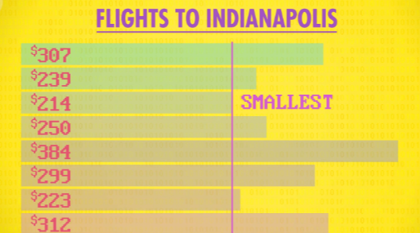
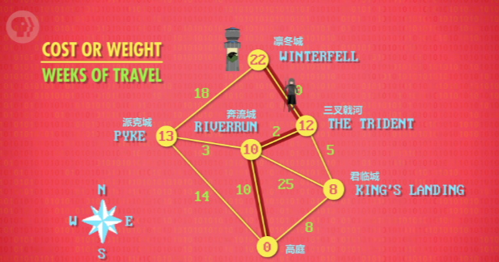

i.e. Intro to Algorithms
前两集，我们"初尝"了高级编程语言（比如 Python 和 Java），我们讨论了几种语句 - 赋值语句，if 语句，循环语句，以及把代码打包成 “函数”，比如算指数。重要的是，之前写的指数函数只是无数解决方案的一种，还有其它方案 - 用不同顺序写不同语句，也能得到一样结果。
不同的是"算法"，意思是：解决问题的具体步骤，即使结果一致，有些算法会更好。 一般来说，所需步骤越少越好，不过有时我们也会关心其他因素，比如占多少内存。
“算法” 一词来自 波斯博识者 阿尔·花拉子密， 1000 多年前的代数之父之一 ，如何想出高效算法 - 是早在计算机出现前就有的问题，诞生了专门研究计算的领域，然后发展成一门现代学科。
你猜对了！计算机科学！
记载最多的算法之一是"排序" ，比如给名字、数字排序。排序到处都是，找最便宜的机票、按最新时间排邮件、按姓氏排联系人，这些都要排序。你可能想"排序看起来不怎么难… 能有几种算法呢？“答案是超多！
计算机科学家花了数十年发明各种排序算法。还起了酷酷的名字，“冒泡排序” （Bubble Sort）、“意面排序”（Spaghetti Sort），我们来试试排序！
选择排序
试想有一堆机票价格，都飞往印第安纳波利斯 （美国地名），数据具体怎么在内存中表示 下周再说。
上图的这样一组数据 叫"数组”（Array）。
来看看怎么排序，先从一种简单算法开始。
- 先找到最小数，从最上面的 307 开始，因为现在只看了这一个，所以它是最小数
- 下一个是 239，比 307 小，所以新的最小数变成 239
- 下一个是 214 ，新的最小数
- 250 不是，384, 299, 223, 312 都不是
- 现在扫完了所有数字，214 是最小的
- 为了升序排列（从小到大排序），把 214 和最上面的数字，交换位置
好棒！刚排序了一个数字！现在重复同样的过程！
- 这次不从最上面开始，从第 2 个数开始，先看到 239，我们当作是 "最小数"
- 扫描剩下的部分，发现 223 最小，所以把它和第 2 位交换
- 重复这个过程，从第 3 位数字开始，让 239 和 307 互换位置
- 重复直到最后一个数字
瞧，数字排好了，可以买机票了！
刚刚这种方法，或者说算法，叫 选择排序 - 非常基础的一种算法。
以下是"伪代码"（pseudo-code）。
这个函数可以排序 8 个，80 个或 8 千万个数字，函数写好了就可以重复使用，这里用循环遍历数组，每个数组位置都跑一遍循环，找最小数然后互换位置。可以在代码中看到这一点 （一个 for 循环套另一个 for 循环），这意味着，大致来说，如果要排 N 个东西，要循环 N 次，每次循环中再循环 N 次，共 N*N 。
算法的 输入大小 和 运行步骤 之间的关系，叫算法的 复杂度 ，表示运行速度的量级。计算机科学家们把算法复杂度叫 - 没开玩笑 - 大 O 表示法 。
算法复杂度 O(N) 效率不高。前面的例子有 8 个元素（n=8）, 8 = 64，如果 8 个变 80 个，运行时间变成 80 = 6400，虽然大小只增长了 10 倍（8 到 80），但运行时间增加了 100 倍！（64 到 6400 ）。随着数组增大，对效率的影响会越来越大，这对大公司来说是个问题，比如 谷歌，要对几十亿条信息排序。
= 数据量上来了，一切都会变得复杂了！*
作为未来的计算机科学家你可能会问：有没有更高效的排序算法？
归并排序
回到未排序的数组，试另一个算法 “归并排序”。
- 第一件事是检查数组大小是否 > 1
- 如果是，就把数组分成两半
- 因为数组大小是 8，所以分成两个数组，大小是 4
- 但依然大于 1，所以再分成大小是 2 的数组
- 最后变成 8 个数组，每个大小为 1
- 现在可以"归并"了，"归并排序"因此得名
-
- 从前两个数组开始，读第一个（也是唯一一个）值
- 307 和 239
- 239 更小，所以放前面
- 剩下的唯一数字是 307 ，所以放第二位
- 成功合并了两个数组
重复这个过程，按序排列，然后再归并一次。
- 同样，取前两个数组，比较第一个数
- 239 和 214
- 214 更小，放前面
-
- 再看两个数组里的第一个数：239 和 250
- 239 更小，所以放下一位
-
- 看剩下两个数：307 和 250
- 250 更小，所以放下一位
-
- 最后剩下 307 ，所以放最后
-
- 每次都以 2 个数组开始
- 然后合并成更大的有序数组
我们把刚隐藏起来的，下面的数组也这样做。
现在有两个大小是 4 的有序数组，就像之前，比较两个数组的第一个数，取最小数，重复这个过程，直到完成，就排好了！
但坏消息是：无论排多少次，你还是得付 214 美元到印第安纳波利斯。总之，“归并排序"的算法复杂度是 O(n * log n)，
- n 是需要 比较+合并 的次数，和数组大小成正比
- log N 是合并步骤的次数
例子中把大小是 8 的数组，分成四个数组，然后分成 2 个，最后分成 1 个，分了 3 次。重复切成两半，和数量成对数关系
相信我！
Log_2 8=3
如果数组大小变成 16 - 之前的两倍，也只要多分割 1 次，因为 Log_2 16=4 ，即使扩大一千倍，从 8 到 8000，分割次数也不会增大多少 - log_2 8000≈13 ，13 比 3 只是 4 倍多一点，然而排序的元素多得多，因此"归并排序"比"选择排序"更有效率。
这下我收藏的陶瓷猫 可以更快排序了！
有好几十种排序算法，但没时间讲。
图搜索
所以我们来谈一个经典算法问题：图搜索（graph search）。
“图” 是用线连起来的一堆 “节点”，可以想成地图，每个节点是一个城市，线是公路。一个城市到另一个城市，花的时间不同，可以用 成本 (cost) 或 权重 (weight) 来代称，代表要几个星期。假设想找"高庭"到"凛冬城"的最快路线，最简单的方法是尝试每一条路，计算总成本，这是蛮力方法。假设用蛮力方法 来排序数组，尝试每一种组合，看是否排好序，这样的时间复杂度是 O(n!)，n 是节点数，n! 是 n 乘 n-1 乘 n-2… 一直到 1，比 O(n ) 还糟糕。
我们可以更聪明些！
图搜索问题的经典算法发明者是理论计算机科学的伟人 Edsger Dijkstra，所以叫 “Dijkstra 算法”。从"高庭"开始，此时成本为 0，把 0 标在节点里，其他城市标成问号，因为不知道成本多少，Dijkstra 算法总是从成本最低的节点开始，目前只知道一个节点 “高庭”, 所以从这里开始，跑到所有相邻节点，记录成本，完成了一轮算法，但还没到"凛冬城”，所以再跑一次 Dijkstra 算法，“高庭” 已经知道了，下一个成本最低的节点，是 “君临城”。就像之前，记录所有相邻节点的成本，到"三叉戟河"的成本是 5，然而我们想记录的是，从"高庭"到这里的成本，所以"三叉戟河"的总成本是 8+5=13 周，现在走另一条路到"奔流城"，成本高达 25 ，总成本 33，但 “奔流城” 中最低成本是 10，所以无视新数字，保留之前的成本 10，现在看了"君临城"的每一条路，还没到"凛冬城" 所以继续。下一个成本最低的节点，是"奔流城"，要 10 周，先看 “三叉戟河” 成本： 10+2=12，比之前的 13 好一点，所以更新 “三叉戟河” 为 12，“奔流城"到"派克城"成本是 3，10+3=13，之前是 14，所以更新 “派克城” 为 13。“奔流城"出发的所有路径都走遍了， 你猜对了，再跑一次 Dijkstra 算法。下一个成本最低的节点，是"三叉戟河”，从"三叉戟河"出发，唯一没看过的路，通往"凛冬城”！成本是 10，加"三叉戟河"的成本 12，总成本 22。再看最后一条路，“派克城"到"凛冬城”，成本 31。现在知道了最低成本路线，让军队最快到达，还绕过了"君临城"！
Dijkstra 算法的原始版本，构思于 1956 年，算法复杂度是 O(n )。前面说过这个效率不够好，意味着输入不能很大，比如美国的完整路线图，幸运的是，Dijkstra 算法几年后得到改进，变成 O(n log n + l)。
> n 是节点数，l 是多少条线
虽然看起来更复杂，但实际更快一些。用之前的例子，可以证明更快（6 个节点 9 条线），从 36 减少到 14 左右。
就像排序，图搜索算法也有很多，有不同优缺点。每次用谷歌地图时，类似 Dijkstra 的算法就在服务器上运行，找最佳路线，算法无处不在，现代世界离不开它们。
这集只触及了算法的冰山一角。
但成为计算机科学家的核心，是根据情况合理决定，用现有算法，还是自己写新算法。
希望这集的小例子能让你体会到这点。
下周见。